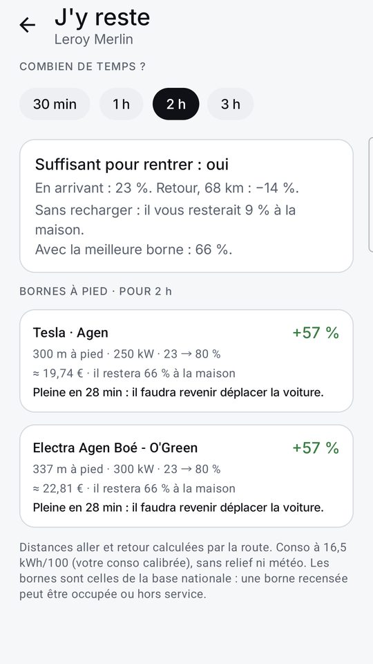
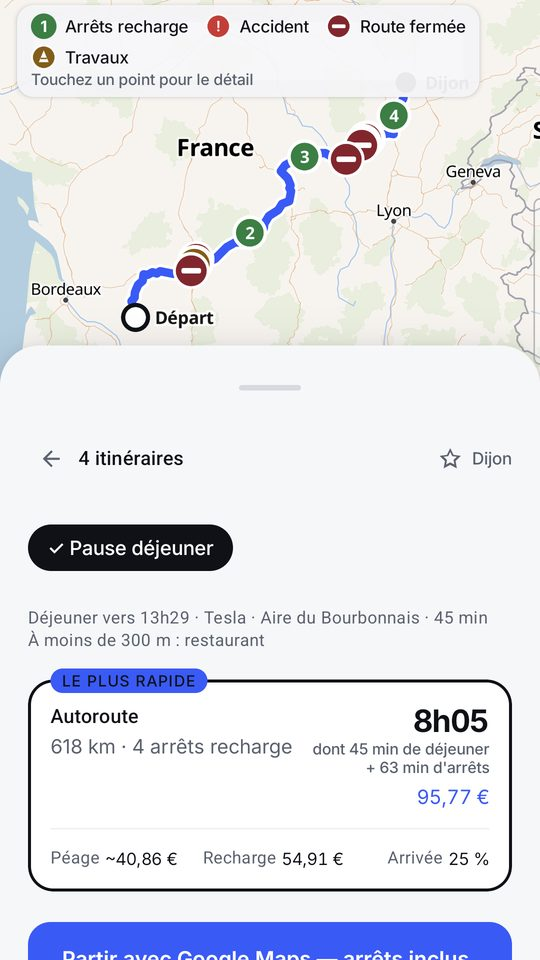

« J'y reste »
Vous indiquez le lieu et le temps que vous y passez. Wattlas liste les bornes accessibles à pied, ce que la batterie aura récupéré à votre retour, et si c'est suffisant pour rentrer.

Sur la route : la pause déjeuner
Sur un long trajet, l'arrêt de recharge qui tombe entre midi et deux devient la pause repas, avec ce qu'il y a à manger à moins de 300 m. Ces minutes-là ne comptent pas comme un arrêt subi.

Ce que Wattlas ne sait pas
Il ne sait pas si la borne est libre au moment où vous arrivez : la disponibilité n'est pas remontée en direct. Le tarif est estimé par réseau, pas relevé borne par borne.
Wattlas est sur Google Play. Android, France. Gratuit, sans compte, sans publicité, sans achat intégré.
Questions fréquentes
Comment savoir si une recharge pendant mes courses suffira pour rentrer ?
La fonction « J'y reste » de Wattlas calcule ce que la batterie aura récupéré pendant la durée indiquée, et dit si c'est suffisant pour rentrer.
Wattlas indique-t-il les bornes accessibles à pied ?
Oui. « J'y reste » liste les bornes proches du lieu, à distance de marche. Au Leroy Merlin d'Agen, par exemple, deux bornes à 300 m.
Wattlas sait-il si la borne est libre ?
Non. La disponibilité des bornes n'est pas remontée en direct. Les bornes viennent de la base nationale des IRVE.